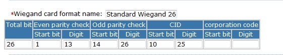

Wiegand Card Format
Wiegand Card Format means settings the wiegand card format allow reader identify. System default defines 27 kinds of wiegand card formats. Users can customize the wiegand card format.
Add wiegand card format:
1. Click [Access Control] - [Door configurations] - [Wiegand Card Format] - [Add] to show the wiegand card format interface;
2. Settings the card format, the total bit max 80 bit. Even parity check and odd parity check can not more than total bit. CID and corporation code can not more than total bit. How to settings can refer to the default defines 27 kinds of wiegand card formats.
